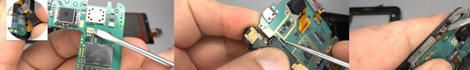
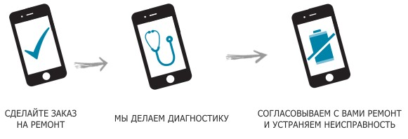

Ремонт телефона
Если Ваш мобильный телефон поврежден или по какой-либо причине вышел из строя, а гарантийный срок истек, сервисный центр AKS.ua всегда к Вашим услугам! Ремонт мобильного телефона с любыми неполадками будет выполнен быстро и качественно. Кроме того, может быть восстановлен телефон уже после недостаточно квалифицированного вмешательства. Что бы уточнить цену или любую другую информацию о ремонте мобильного телефона наберите по любому из указанный телефонов (044) 377-51-55, (067) 440-06-08, (050) 802-07-77.
| Стоимость | |
| Диагностика, причина поломки мобильного телефона | Бесплатно |
| Замена программного обеспечения (перепрошивка), снятие защитных кодов, установка различных программ, русификация мобильного телефона | 70 грн |
| Замена корпуса телефона или определенной его части | от 350 грн + деталь |
| Замена дисплея (делаем замену дисплея не на все телефоны) | от 250 грн + деталь |
| Замена сенсорной панели | от 200 грн + деталь |
| Замена клавиатуры | от 75 грн + деталь |
| Замена шлейфов | от 100 грн + деталь |
| Замена микрофона | от 75 грн + деталь |
| Замена камеры | от 100 грн + деталь |
| Замена динамика | от 75 грн + деталь |
| Замена джойстика | 200 + деталь |
| Прошивка мобильного | от 50 грн |
| Чистка телефона от пыли и грязи | от 75 грн |
| Обрез Sim-карты под слот micro-Sim | 20 грн |
| Замена разьемов (питания, аудио, USB) | от 150 грн |
* сроки ремонта могут быть различными, так как они напрямую зависят от характера неисправности. В большинстве случаев они занимают не более нескольких дней, так как у нас имеется собственный склад оригинальных запчастей. Но иногда комплектующие приходится заказывать, а потому срок ремонта может несколько увеличиться. Мы даем гарантию на все виды произведенных ремонтных работ, а потому вы можете быть уверены в высоком качестве наших услуг.

Порядок оказания услуг:

Для жителей из других регионов Украины мы предоставляем уникальную услугу замены дисплея на телефонах дистанционно. Процедура очень проста. Вы связываетесь с менеджером по номеру телефона (044) 377-51-55. Затем отсылаете Ваш телефон нам. Мы проводим бесплатную диагностику. После этого согласовываем с Вами цену ремонта и устраняем неисправность. В конце отправляем телефон Вам обратно наложным платежём или по 100% предоплате.
У нас есть успешный опыт работы с клиентами с Одессы, Киева, Днепропетровска, Харькова, Львова, Донецка, Запорожья, Кривого Рога, Николаева, Мариуполя, Луганска, Севастополя, Винницы, Макеевки, Симферополя, Херсона, Полтавы, Чернигова, Черкасс, Житомира, Сум, Хмельницкого, Горловки, Ровно, Кировограда, Днепродзержинска, Черновцов, Кременчуга, Ивано-Франковска, Тернополя, Белой Церкви, Луцка, Краматорска, Мелитополя, Керчи, Никополя, Северодонецка, Славянска, Бердянска, Ужгорода, Алчевска, Павлограда, Евпатории, Лисичанска, Каменец-Подольского, Ялты, Владимир-Волынского, Александрии и другие.